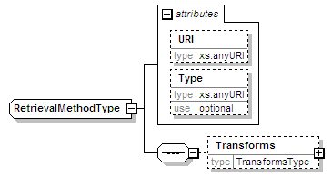
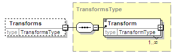

| diagram |  | ||||||||||||||||||
| namespace | urn:oasis:names:tc:evs:schema:eml:ts | ||||||||||||||||||
| children | Transforms | ||||||||||||||||||
| used by |
|
||||||||||||||||||
| attributes |
|
||||||||||||||||||
| source | <xs:complexType name="RetrievalMethodType"> <xs:sequence> <xs:element name="Transforms" type="TransformsType" minOccurs="0"/> </xs:sequence> <xs:attribute name="URI" type="xs:anyURI"/> <xs:attribute name="Type" type="xs:anyURI" use="optional"/> </xs:complexType> |
| type | xs:anyURI | ||
| properties |
|
||
| source | <xs:attribute name="URI" type="xs:anyURI"/> |
| type | xs:anyURI | ||||
| properties |
|
||||
| source | <xs:attribute name="Type" type="xs:anyURI" use="optional"/> |
| diagram |  | ||||||||
| namespace | urn:oasis:names:tc:evs:schema:eml:ts | ||||||||
| type | TransformsType | ||||||||
| properties |
|
||||||||
| children | Transform | ||||||||
| used by |
|
||||||||
| source | <xs:element name="Transforms" type="TransformsType" minOccurs="0"/> |